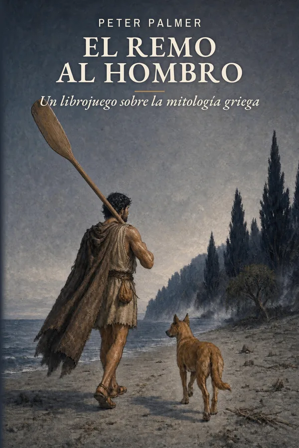

Mitología griega · a partir de 10 años
El remo al hombro
Un librojuego sobre la mitología griega
La noche en que se parte el mástil de la nave, aprietas tu remo y esperas la ola. Despiertas en una playa gris, bajo un cielo que no reconoces. A tu lado solo hay un perro joven de pelo leonado que parece saber adónde ir. Y todos los que encuentras, tarde o temprano, quieren saber tu nombre.
Te llamas Anfialo. Eres hijo de Euríloco y nieto de Odiseo, y tu familia tiene una cuenta pendiente con el mar. Para saldarla tendrás que elegir a cada paso qué camino tomar, de quién fiarte, cuándo luchar y cuándo huir, y qué responder a quien te pone a prueba.
Solo un camino llega hasta el final.
Próximamente